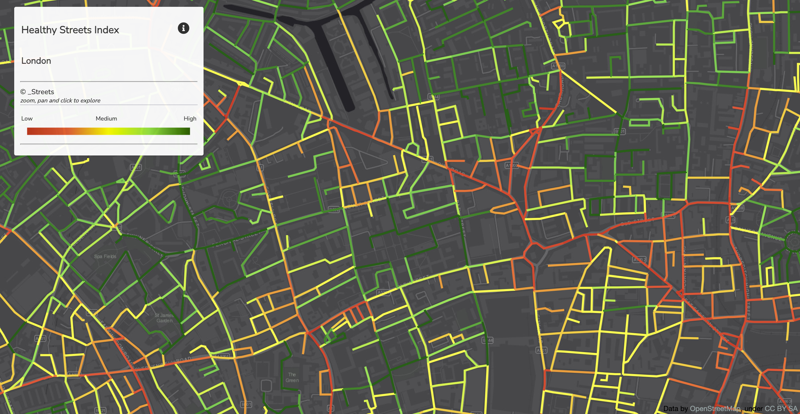

Comfort Path: Explore walkable streets across London
Project Summary
Our project enables a wide range of users to analyse the walkability of London’s streets and explore specific routes. Rather than imposing a single definition, the application allows users to apply their own walkability criteria.
To support this, we break walkability down into a set of pre-computed parameters for each street segment. Users can then assign their own weights to these parameters based on what matters most to them. These user-defined weights are incorporated into a modified cost function within Dijkstra’s algorithm, enabling the system to compute the most suitable route according to each individual’s preferences.
Problem Statement



Why? The apps on the market focus on a few selected indicators or are not interactive.
Who are the users? Policy-makers and the general public.
Data and Methodology

We transformed the scores into penalties, and applied them on a graph of walkable networks, which allowed continuous path search across the study area. Using these pre-calculated route-based penalties, the personalised routing cost is defined as a weighted, normalised, and additive cost function:
\[ \Large \begin{aligned} \text{edge\_cost} =\;& w_{\text{length}} \cdot \text{length}_{\text{norm}} \\ &+ w_{\text{safety}} \cdot \text{unsafety}_{\text{penalty}} \\ &+ w_{\text{activity}} \cdot \text{inactivity}_{\text{penalty}} \\ &+ w_{\text{walk}} \cdot \text{walking\_effort}_{\text{penalty}} \\ &+ w_{\text{shade}} \cdot \text{lack\_shade\_shelter}_{\text{penalty}} \\ &+ w_{\text{air}} \cdot \text{polluted\_air}_{\text{penalty}} \\ &+ w_{\text{noise}} \cdot \text{road\_noise}_{\text{penalty}} \end{aligned} \]
Interface
On load the map is showing the default walkability scores plotted. The panel on the left features sliders that allow the user to select their individual preferences; origin-destination block is below. After the preferences and the locations are set, the application is showing two routes: shortest and preferred. As the preferences change, the routes and the general walkability map are changed interactively.
The Application
How it Works
Indicator Precomputations
Shade and shelter
This indicator measures whether a street offers shelter from sun in summer and wind during the rest of the year. Script is available here.
Shade cover was modelled using ee.Terrain.hillShadow() with England 1m DSM, which captures buildings, vegetation, and other shadow-casting features. Average summer solar azimuth and zenith were calculated separately using the pvlib package. Mean surface temperature on the hottest day was used to complement the shade metric.
var shadowMap = ee.Terrain.hillShadow({
image: londonDsmMerc,
azimuth: 180.02504604372402,
zenith: 62.63912040279354,
neighborhoodSize: 100,
hysteresis: false
});
// Generate the shadow map
var londonShadow = shadowMap.eq(0).rename('shadow')// 1 = shadow, 0 = not shadow
.toFloat()
.setDefaultProjection(targetProj);Wind calculation was simplified by modelling “wind shadow” from prevailing winds using the same approach. Wind direction was derived from ERA5-Land Daily Aggregated horizontal wind vectors for non-summer months. A fixed “zenith” value was used to limit wind-shadow extent, as vertical wind angle could not be robustly estimated. Mean wind speed was used to complement the wind cover metric.
// WIND DIRECTION
var wind = windSource
.filterBounds(london)
.filterDate('2025-10-19', '2026-03-19')
.select(['u_component_of_wind_10m', 'v_component_of_wind_10m'])
.mean()
.clipToCollection(london);
// direction wind blows TO
var windTo = wind.expression(
'(atan2(u, v) * 180 / pi + 360) % 360', {
u: wind.select('u_component_of_wind_10m'),
v: wind.select('v_component_of_wind_10m'),
pi: Math.PI
}).rename('wind_to');
// convert to direction wind comes FROM
var windFrom = windTo.add(180).mod(360).rename('wind_from');
var meanWindFrom = ee.Number(
windFrom.reduceRegion({
reducer: ee.Reducer.mean(),
geometry: london,
scale: 1000,
bestEffort: true,
maxPixels: 1e8
}).get('wind_from')
);
// 0 = sheltered, 1 = exposed
var windShelterRaw = ee.Terrain.hillShadow({
image: londonDsmMerc,
azimuth: meanWindFrom,
zenith: 39,
neighborhoodSize: 9,
hysteresis: false
});
// 1 = wind protected, 0 = not protected
var windProtected = windShelterRaw.eq(0)
.rename('wind_protected')
.toFloat()
.setDefaultProjection(targetProj);All scores were precomputed in Google Earth Engine by applying ee.Reducer.mean() to the multi-band raster over buffered street segments.
var stacked = londonShadow
.addBands(surfaceTemp)
.addBands(windSpeed)
.addBands(windProtected)
.clipToCollection(london);
// BATCH PROCESSING BY our_uid
var uidField = 'our_uid';
var batchSize = 80000;
var bufferDistance = 10; // meters
var exportFolder = 'GEE_Road_Batches';
var exportPrefix = 'roads_stats';
// Check UID range
var minUid = ee.Number(roads.aggregate_min(uidField));
var maxUid = ee.Number(roads.aggregate_max(uidField));
// Number of batches based on UID range
var nBatches = maxUid.subtract(minUid).divide(batchSize).ceil();
print('Number of batches', nBatches);
// Get one batch by UID range: [start, end)
function getBatchByUid(fc, start, end) {
return fc.filter(ee.Filter.and(
ee.Filter.gte(uidField, start),
ee.Filter.lt(uidField, end)
));
}
// Buffer roads only for raster extraction; keep original properties
function bufferRoads(fc) {
return fc.map(function(f) {
return ee.Feature(f.buffer(bufferDistance)).copyProperties(f);
});
}
// Run zonal stats for one batch
function computeBatchStats(roadsBatch) {
var bufferedBatch = bufferRoads(roadsBatch);
return stacked.reduceRegions({
collection: bufferedBatch,
reducer: ee.Reducer.mean(),
scale: 1,
crs: 'EPSG:3857',
tileScale: 8
});
}
// EXPORT ALL BATCHES
nBatches.evaluate(function(n) {
minUid.evaluate(function(minVal) {
for (var i = 0; i < n; i++) {
var start = minVal + i * batchSize;
var end = start + batchSize;
var roadsBatch = getBatchByUid(roads, start, end);
var statsBatch = computeBatchStats(roadsBatch);
Export.table.toDrive({
collection: statsBatch,
description: exportPrefix + '_' + start + '_' + (end - 1),
folder: exportFolder,
fileNamePrefix: exportPrefix + '_' + start + '_' + (end - 1),
fileFormat: 'CSV',
selectors: [
uidField,
'shadow',
'surface_temp',
'wind_speed',
'wind_protected'
]
});
}
});
});The application below illustrates the 2 core layers generated for “shade and shelter” indicator.
The NDVI was computed with Sentinel2 using the classic approach, and then aggregated into the combined score.
Things to see and do & feeling safe
The point-based scores are constructed using the “hot routes” approach; it was originally developed for crime analysis (Tompson, Partridge and Shepherd, 2009) to better represent route-based concentrations. The script projects points onto street segments, then calculates the density of points based on the gaussian kernel with distance decay, and finally normalises the segment point density by its length. The transformations can be described by the following formula:
\[ \Large \text{KDE}_{\text{segment}} = \frac{ \sum_{i=1}^{n} e^{-0.5 \times \left(d_i / b\right)^2} }{ \text{L} } \]
Where:
\[ \begin{aligned} d_i &= \text{distance from point } i \text{ to street segment (meters)} \\ b &= \text{bandwith, equals 100 meters in the code example} \\ n &= \text{number of points within 100 m} \\ L &= \text{street segment length (meters)} \end{aligned} \]
# Compute KDE score for a road segment from nearby points
for _, point_row in candidates.iterrows():
dist = geom.distance(point_row.geometry)
if dist > bandwidth: # Ignore points outside bandwidth radius
continue
kernel_weight = _kde_weight(dist, bandwidth, kernel) # Kernel decay
kde_sum += kernel_weight # Accumulate contribution for segment
kde_segment = kde_sum / segment_length # Normalize by segment lengthEach indicator (activity and safety) is aggregated through an unweighted l inear combination of two metrics, aggregated score is rescaled using min–max normalization so that values fall within the predefined range [0,1].
Clean air & noise
The indicators were normalised and treated for missing and extreme values. The normalized indicators were then integrated via a weighted linear combination to derive a composite index for each road segment. Script here.
Walking effort
Slope was derived from a DEM by sampling the start and end points of each road segment and calculating the elevation difference relative to the segment length. This allowed each segment to be described not only by distance but also by the physical effort required to walk along it. The script for this part can be found here.
Network graph and routing
We converted the indicator-enriched network into a graph structure, where each road segment is represented as an edge and intersections as nodes. This allows continuous path search and provides the structural basis for both shortest-path and personalised routing. Instead of rebuilding the graph every time a route is requested, the project uses a cached version (main_graph.pkl), making the system responsive for user interaction.
A limitation of the current framework is that the quality of the personalised route depends heavily on the quality of the segment-level scores produced during preprocessing. Some variables may show highly uneven distributions across the network, which can affect both the visual interpretation of the overlay and the sensitivity of route choice. Additionally, the behavioural realism of pedestrian decision-making is still simplified to a weighted additive structure to keep the model transparent and computationally efficient.
The scripts for this part are stored here.
References
Bartzokas-Tsiompras, A., Bakogiannis, E. and Nikitas, A. (2023) ‘Global microscale walkability ratings and rankings: A novel composite indicator for 59 European city centres’, Journal of Transport Geography, 111, p. 103645. Available at: https://doi.org/10.1016/j.jtrangeo.2023.103645.
Jensen, A., Anderson, K., Holmgren, W., Mikofski, M., Hansen, C., Boeman, L., Loonen, R. “pvlib iotools — Open-source Python functions for seamless access to solar irradiance data.” Solar Energy, 266, 112092, (2023). DOI: 10.1016/j.solener.2023.112092.
How Weighted Overlay works (no date) ArcGIS Pro. ArcGIS Pro. Available at: https://pro.arcgis.com/en/pro-app/latest/tool-reference/spatial-analyst/how-weighted-overlay-works.htm (Accessed: 26 April 2026).
Labdaoui, K. et al. (2021) ‘The Street Walkability and Thermal Comfort Index (SWTCI): A new assessment tool combining street design measurements and thermal comfort’, Science of The Total Environment, 795, p. 148663. Available at: https://doi.org/10.1016/j.scitotenv.2021.148663.
Socharoentum, M. and Karimi, H.A. (2016) ‘Multi-modal transportation with multi-criteria walking (MMT-MCW): Personalized route recommender’, Computers, Environment and Urban Systems, 55, pp. 44–54. Available at: https://doi.org/10.1016/j.compenvurbsys.2015.10.005.
Sprent, R.F. et al. (2024) ‘Multi-Criteria Framework for Routing on Access Land: A Case Study on Dartmoor National Park’, ISPRS International Journal of Geo-Information, 13(4), p. 130. Available at: https://doi.org/10.3390/ijgi13040130.
Stutz, P. et al. (2025) ‘Walkability at Street Level: An Indicator-Based Assessment Model’, Sustainability, 17(8), p. 3634. Available at: https://doi.org/10.3390/su17083634.
Tompson, L., Partridge, H. and Shepherd, N. (2009) ‘Hot Routes: Developing a New Technique for the Spatial Analysis of Crime’, 1(1), pp. 77–96.
Zaragosa, J.J.M. (2025) ‘Using Google Earth Engine to Find Barrier Against Wind Terrain using Wind Direction and Elevation’, Medium, 24 March. Available at: https://medium.com/@junjunzaragosa2309/using-google-earth-engine-to-find-barrier-against-wind-terrain-using-wind-direction-and-elevation-3c5b9fb45ad2 (Accessed: 26 April 2026).